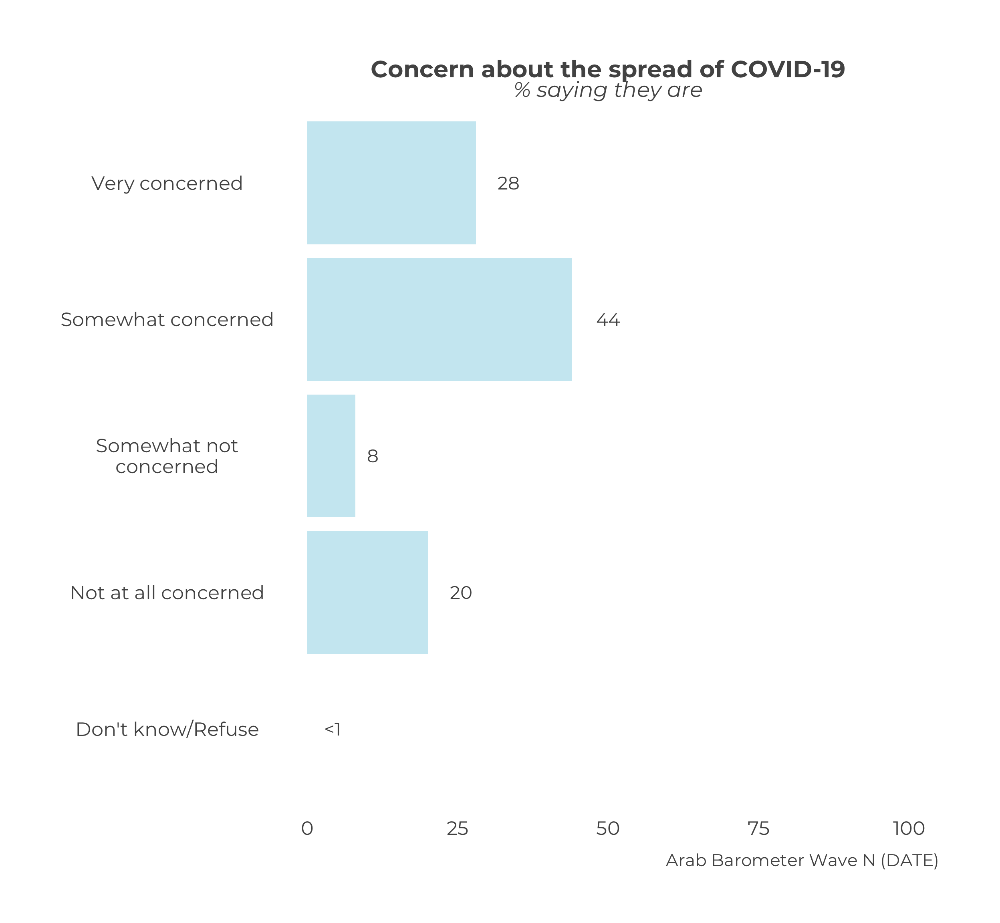
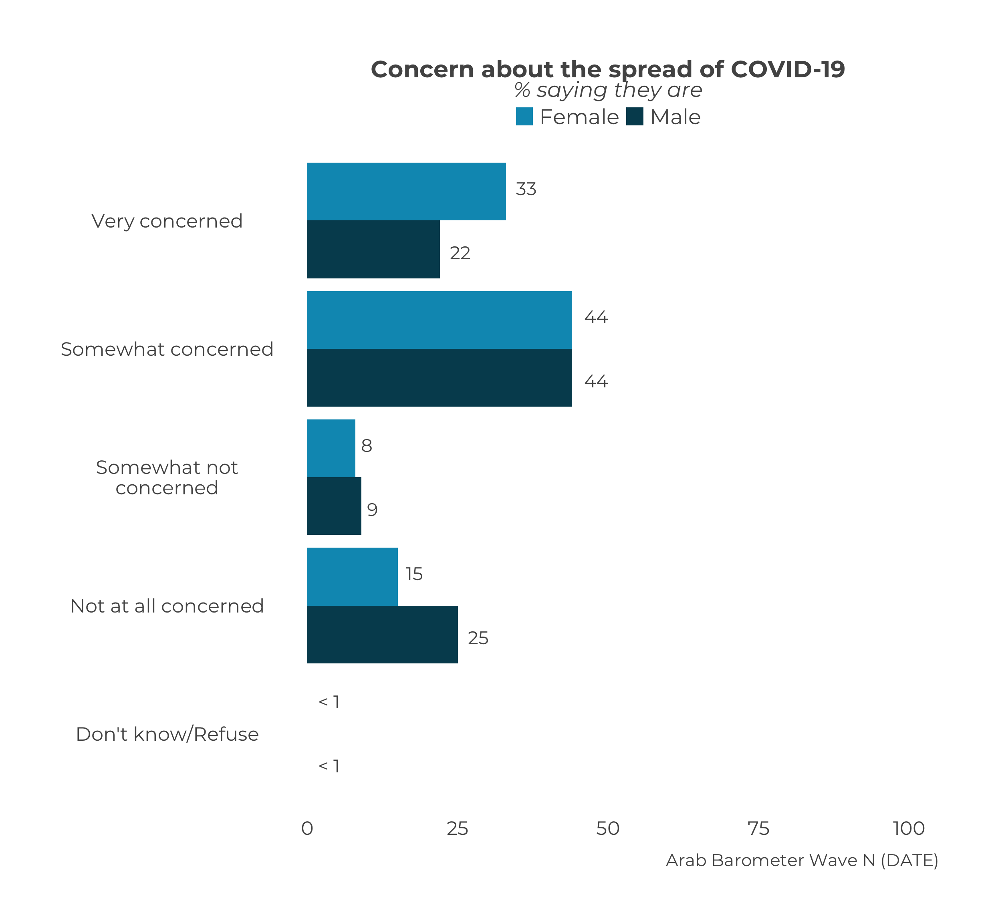
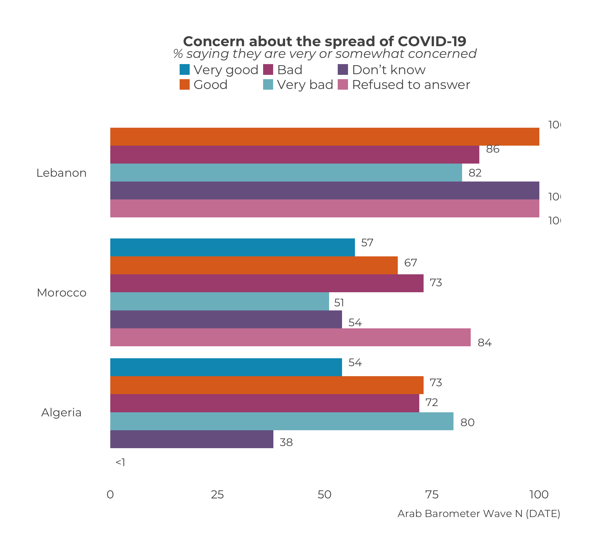
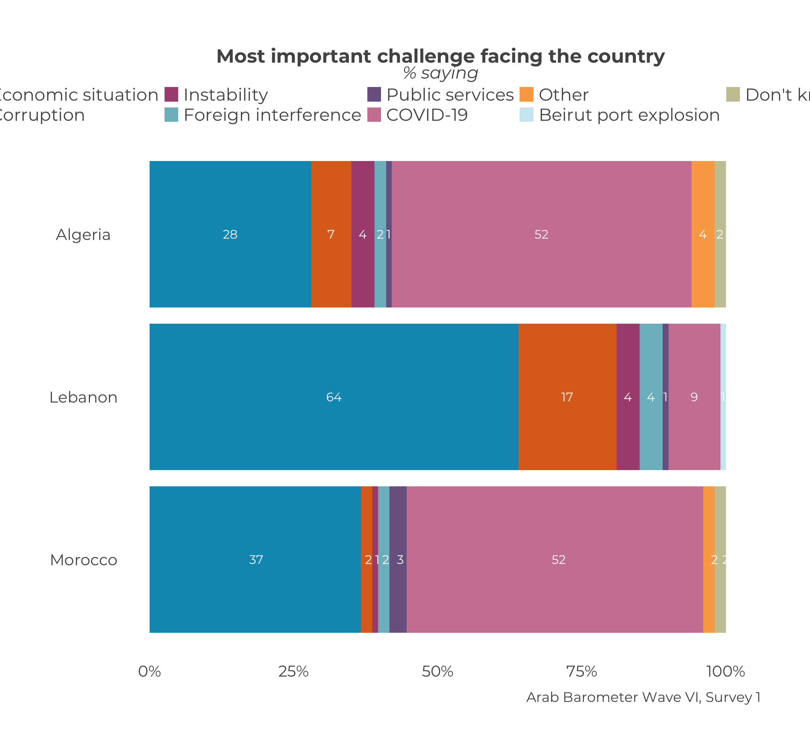
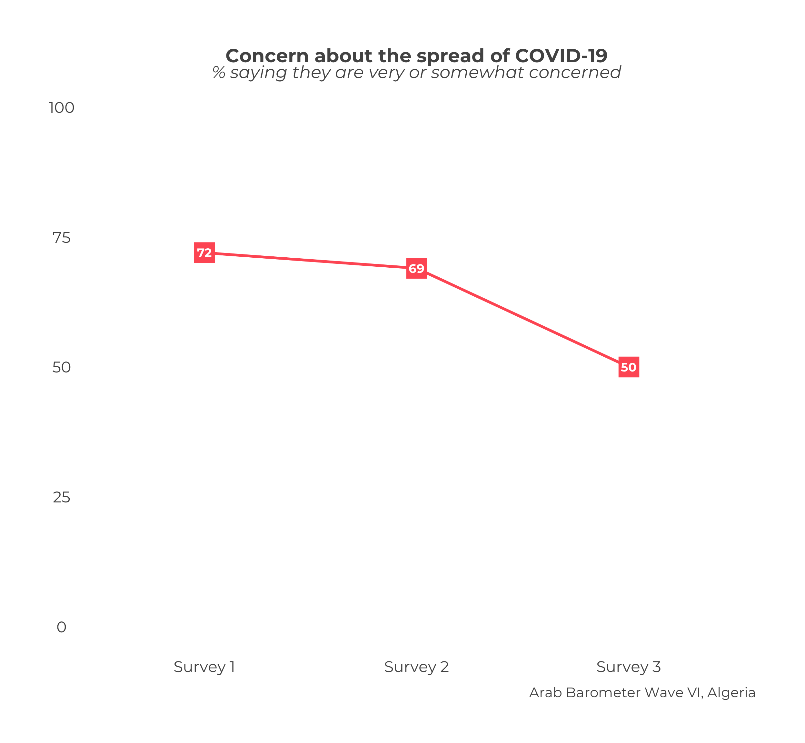
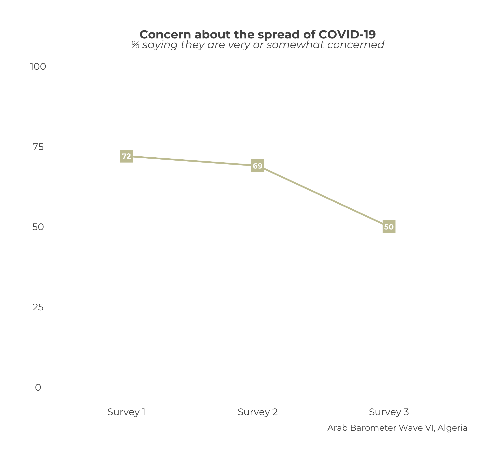
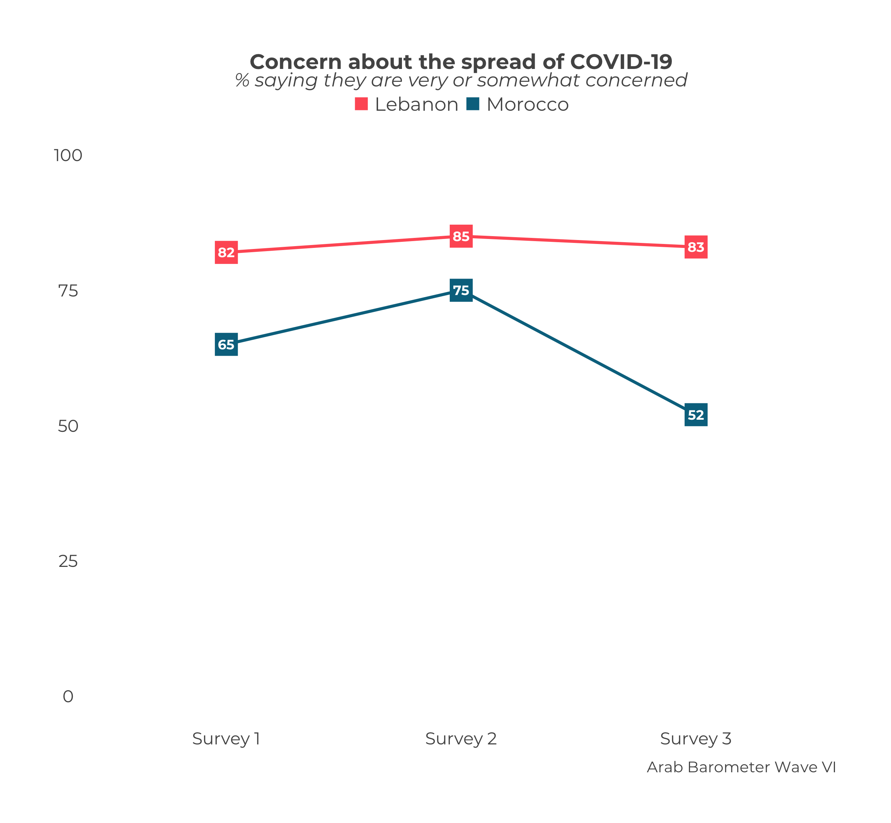

Chapter 17 Change Default Colors
17.1 Basic Cross Tabs
The parameter is called .clr. This parameter accepts either a color name from ArabBarometR or a hex code.
survey1 |>
calculate_smry_individual("Q1COVID19",
"Algeria") |>
plot_smry_individual(.clr = "zeke")
survey1 |>
calculate_smry_comp("Q1COVID19") |>
plot_smry_comp(.clr = "#FF5E64")17.2 Demographic Cross Tabs
The parameter to change is called .color_palette. This parameter accepts any of the following:
"default"(which it is set to),- the name of an
ArabBarometRcolor palette, - a vector of
ArabBarometRcolor names, or - a vector of hex codes.
If you choose to use a vector of either color names or hex codes, it must be the same length as the number of demographic categories. For example, the gender demographic has two categories, so a vector of custom colors needs to be length two. You can check the number of categories by looking at the data frame you are plotting.
survey1 |>
calculate_demographic_smry_individual("Q1COVID19",
"Algeria",
.dem = "gender") |>
plot_demographic_smry_individual(.color_palette = "blue pair")
survey1 |>
calculate_demographic_smry_comp("Q1COVID19",
.dem = "gender") |>
plot_demographic_smry_comp(.color_palette = c("salma","mary clare"))data_frame_2_plot <- survey1 |>
calculate_demographic_smry_comp("Q1COVID19",
.dem = "Q101")
data_frame_2_plot## # A tibble: 35 × 3
## # Groups: Country [6]
## Country Q101 Q1COVID19
## <chr> <fct> <dbl>
## 1 Algeria Very good 54
## 2 Algeria Good 73
## 3 Algeria Bad 72
## 4 Algeria Very bad 80
## 5 Algeria Don’t know 38
## 6 Algeria Refused to answer 0
## 7 Jordan Very good 70
## 8 Jordan Good 65
## 9 Jordan Bad 70
## 10 Jordan Very bad 52
## # … with 25 more rows# 6 categories means 6 colors needed
data_frame_2_plot |>
plot_demographic_smry_comp(.color_palette = c("#0098BE",
"#DF6E21",
"#AC517F",
"#7CBBC7",
"#796391",
"#CF83A3"))
17.3 Stacked Graphs
The parameter is called .color_palette. The parameter accepts any of the following:
- the name of an
ArabBarometRcolor palette, - a vector of
ArabBarometRcolor names, or - a vector of hex codes.
If you choose to use a vector of either color names or hex codes, it must be the same length as the number of categories. Recall that the categories “don’t know” and “refuse” are combined into a single category unless otherwise specified. When determining the number of colors you need for your vector, only count the “don’t know” and “refuse” categories as one category.
Take Q2061A as an example. In the first survey of wave six, question Q2061A had ten response options including “don’t know” and “refuse”. The calculate_stacked_df() function combines “don’t konw” and “refuse” into one category, so the color palette vector only needs to be length nine.
calculate_stacked_df(survey1,
"Q2061A") |>
plot_stacked_comp(.caption = "Arab Barometer Wave VI, Survey 1",
.color_palette = "soft rainbow")calculate_stacked_df(survey1,
"Q2061A") |>
plot_stacked_comp(.caption = "Arab Barometer Wave VI, Survey 1",
.color_palette = c("AB blue",
"AB orange",
"AB magenta",
"AB light blue",
"AB purple",
"AB pink",
"AB yellow",
"zeke",
"pale green"))
17.4 Trend Graphs
By default trend graphs are created in the brand color assigned to them. If you wish to change the color, you can do so by setting the parameter .trend_colors to either a hex code or a color from ArabBarometer_colors().
Single Country Trend Graphs
Changing the color for single country trend graphs is exactly the same as for basic cross tabs, only using a different parameter name.
plot_trend_individual("Q1COVID19",
df_list,
survey_dates,
"Algeria",
.caption = "Arab Barometer Wave VI, Algeria",
.trend_colors = "bright apple") # Arab Barometer color name
plot_trend_individual("Q1COVID19",
df_list,
survey_dates,
"Algeria",
.caption = "Arab Barometer Wave VI, Algeria",
.trend_colors = "#C8C6A2") # hex code
Comparative Trend Graphs
There is greater flexibility in colors for comparative trend graphs. The user may supply a named or unnamed vector of hex codes or Arab Barometer brand colors.
df_list <- list(
survey1,
survey2,
survey3
)
survey_dates <- c("Survey 1",
"Survey 2",
"Survey 3")
# Unnamed color example
plot_trend_comp("Q1COVID19",
df_list,
survey_dates,
.caption = "Arab Barometer Wave VI",
select_countries = c("Lebanon","Morocco"),
.trend_colors = c("bright apple","james bond")
)
# Named color example
trend_colors <- c("bright apple","james bond")
names(trend_colors) <- c("Morocco","Lebanon")
plot_trend_comp("Q1COVID19",
df_list,
survey_dates,
.caption = "Arab Barometer Wave VI",
select_countries = c("Morocco","Lebanon"),
.trend_colors = trend_colors
)The user can also change the color of some but not all countries.
# Change one color example
plot_trend_comp("Q1COVID19",
df_list,
survey_dates,
.caption = "Arab Barometer Wave VI",
select_countries = c("Morocco","Lebanon"),
.trend_colors = c("Lebanon" = "#C8C6A2")
)